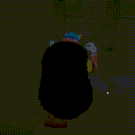
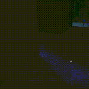
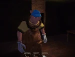

Uncle Samsonite is the seventh monster in Pillar Chase 2. He is a chubby, soul-eating, humanoid abomination that originally appears as the main antagonist of the horror-comedy series of the same name, Uncle Samsonite, created by Jake Bowen. He can be unlocked for 1300 coins at the shop (previously 1555 before the Skin Contest Update, and 1350 before the Black Friday Event's conclusion). He was released on May 17th, 2024..
|  When pressing 1 Uncle Samsonite will move his arms up and down for a few seconds, highlighting every nearby player purple. He must get reasonably close to a player for their Dance Overlay to begin to brighten up, which can be quickly done as Uncle Samsonite gains a significant speed boost once activated, making him the same speed as a full-health sprinting survivor. Players also can't move when they are dancing. Has an 8-second cooldown after the ability ends. |
 When pressing 2 Uncle Samsonite will slam his foot down, creating a large shock wave affecting nearby players. This causes sprinting players to start walking suddenly, and their screens brighten up from the massive increase of Dance Overlay, highlighting them with a purple aura. It also makes Uncle Samsonite sprint a bit faster for a short period after use. Has a 15-second cooldown after slamming his foot. When a player is sent to the Domain, this ability's cooldown will be refreshed. |
 When pressing 3, Uncle Samsonite will teleport to his domain. He cannot use his other 2 abilities when in his domain and can only attack with M1. Pressing 3 again will bring Uncle Samsonite back to the map. Unlike players, Uncle Samsonite can use any of the 6 doors in his domain. When Uncle Samsonite interacts with one of his doors, he will be shown a view of what is outside the door he is entering, and he will have the option to either use the door to get back to the map or go back into his domain to pick another door. While looking in a door, all alive players will have their name tags shown and be highlighted green for a few seconds, so it's optimal to constantly go back to the domain, as it not only increases the amount of time he has but also allows him to track down players easily. All dead players will also be highlighted but will be red to differentiate them from the alive players. Survivors can also be the color yellow if at/or below 50 health. Additionally, if Uncle Samsonite teleports to his domain while a survivor is still inside it, his speed is temporarily decreased until he returns to it again after the survivor trapped inside escapes or is killed. Has a 6-second cooldown after entering his domain. |